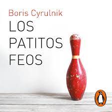
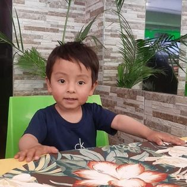

Bienvenidos a mi Blog
Mi nombre es Emili Quispe , tengo 22 años actualmente estoy cursando mi ultimo semestre
de la Carrera de Ing Empresarial
tengo 2 hermanos , vivo en la ciudad de Cochabamba.
Mis
pasatiempos son la musica y mis mascotas , tengo 2 gatitas y dos perritos .
Me encanta pasar
tiempo con mi hermanito Santiago el tiene 5 años y ambos siempre que podemos estamos
juntos , jugando ,
aprendiendo o simplemente escuchando musica
A continuación te presento agunos datos importantes sobre Mi
MI CANCION FAV

SIN PRINCIPIO NI FINAL
Abel Pintos
MI COMIDA FAV

PASTA AL PESTO
Soy amante de las pastas y sobre todo de la pasta al pesto
MI LIBRO FAV
LOS PATITOS FEOS
Este libro es uno de mis favoritos ya que me enseño mucho sobre la resilencia
MI PERSONA FAV
Desde que nacio Santi me ha enseñado lo grande que puedo llegar a ser el amor , el me enseño muchas cosas , mas de de lo que yo podria enseñarle a el tenemos la conexion mas increible de todas , por eso y por muchas cosas mas mi hermano es mi persona fav.